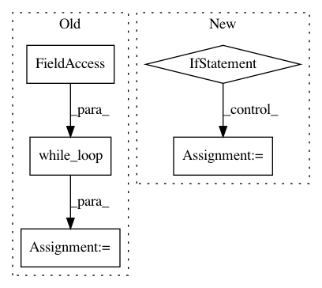

80dd4096ed186e706775adbe3663b46d719efdb0,capsulelayers.py,CapsuleLayer,call,#CapsuleLayer#Any#,94
Before Change
cond = lambda i, b, inputs_hat: i > 0
loop_vars = [K.constant(self.num_routing), self.bias, K.sum(inputs_hat, 1, keepdims=True)]
_, self.bias, outputs = tf.while_loop(cond, body, loop_vars)
// Routing algorithm V2. Seems not right. This may duplicate tensors by self.num_routing times.
for _ in range(self.num_routing):
After Change
self.bias = K.update(self.bias, self.bias + K.sum(inputs_hat * outputs, [0, -2, -1]))
// Handling with no routing scenario. Prior bias will always be zero.
if self.num_routing == 0:
c = K.softmax(self.bias)
c_expand = K.expand_dims(K.expand_dims(K.expand_dims(c, 2), 2), 0)
outputs = squash(K.sum(c_expand * inputs_hat, 1, keepdims=True))
return K.reshape(outputs, [-1, self.num_capsule, self.dim_vector])
def compute_output_shape(self, input_shape):
return tuple([None, self.num_capsule, self.dim_vector])
In pattern: SUPERPATTERN
Frequency: 3
Non-data size: 5
Instances
Project Name: XifengGuo/CapsNet-Keras
Commit Name: 80dd4096ed186e706775adbe3663b46d719efdb0
Time: 2017-10-31
Author: guoxifeng1990@163.com
File Name: capsulelayers.py
Class Name: CapsuleLayer
Method Name: call
Project Name: IBM/adversarial-robustness-toolbox
Commit Name: babc30faa938bde87dedb1d970d8dfddb116564b
Time: 2020-06-23
Author: M.N.Tran@ibm.com
File Name: art/attacks/evasion/shapeshifter.py
Class Name: ShapeShifter
Method Name: _build_graph
Project Name: reinforceio/tensorforce
Commit Name: ee950b503eeed5aca3747a4bcf2a40f624b743a0
Time: 2019-01-21
Author: alexkuhnle@t-online.de
File Name: tensorforce/core/optimizers/multi_step.py
Class Name: MultiStep
Method Name: tf_step